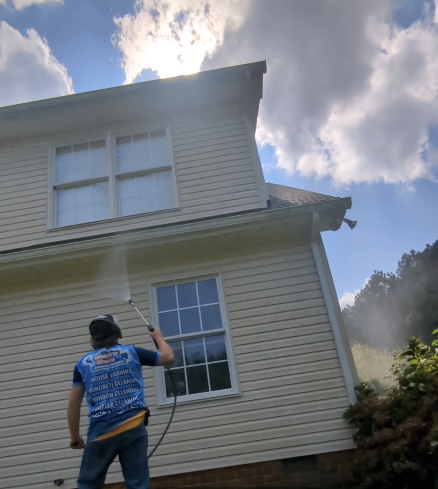
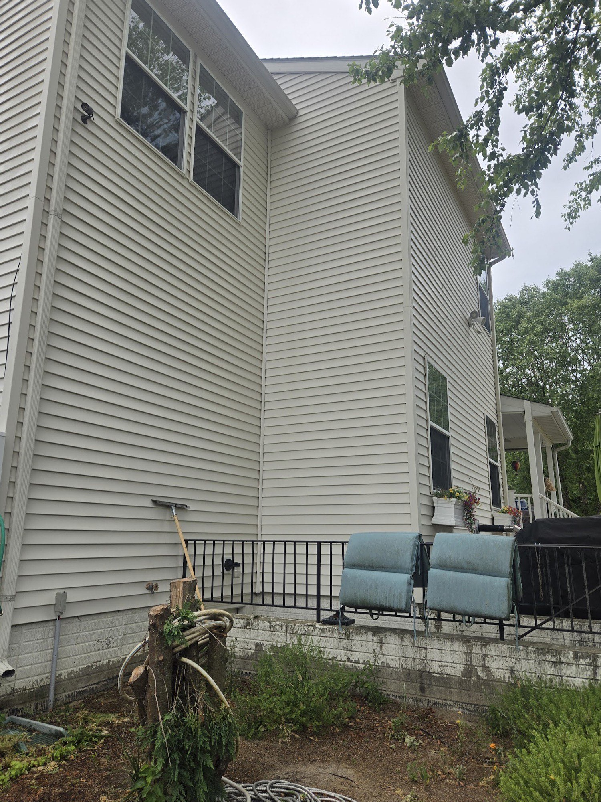
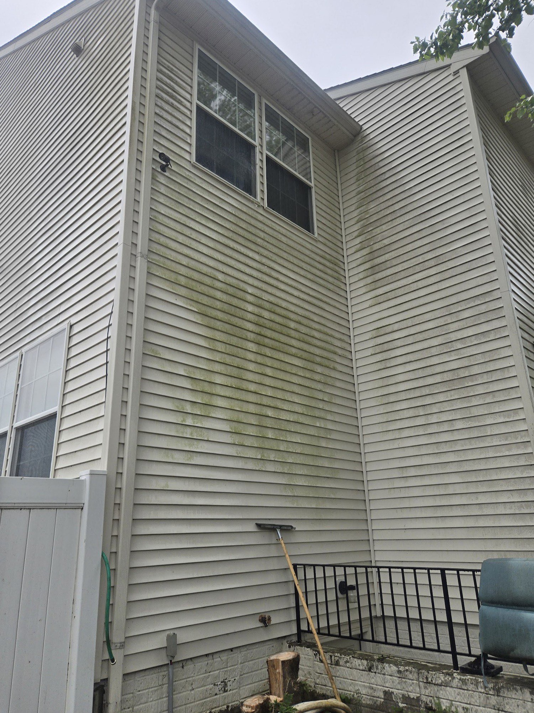
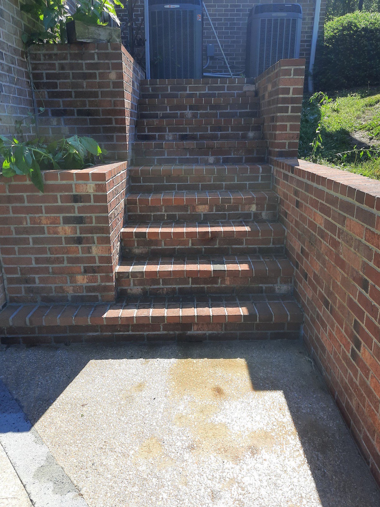
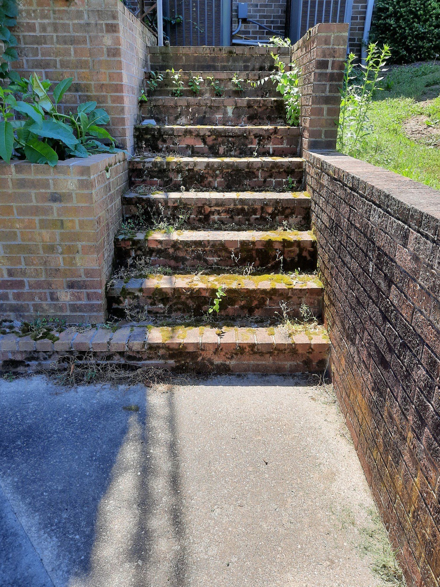
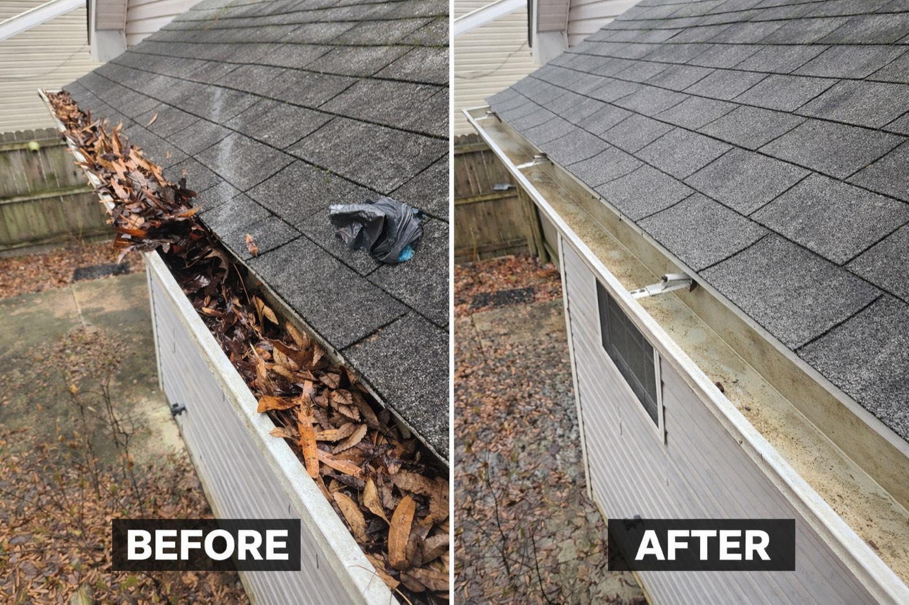
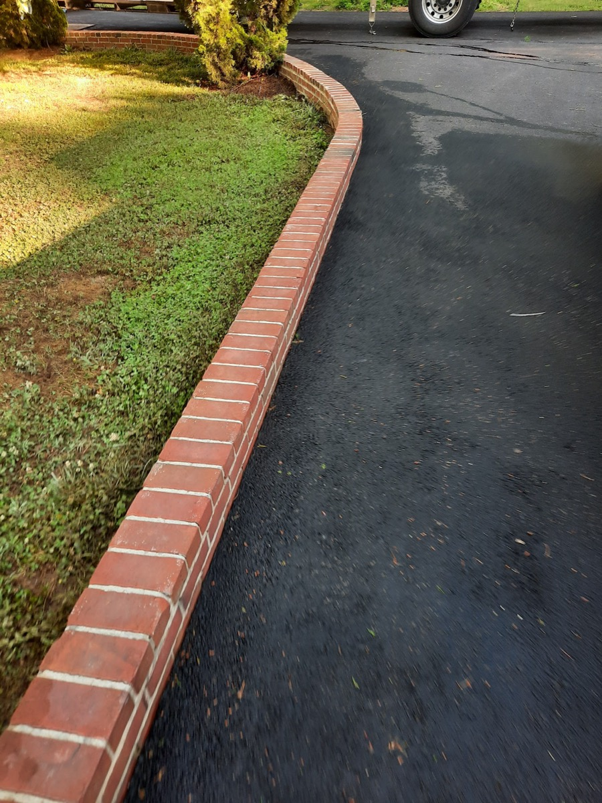
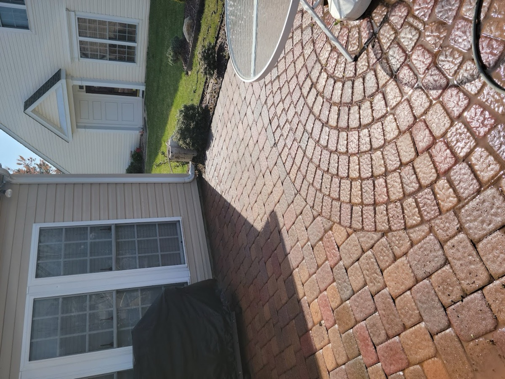
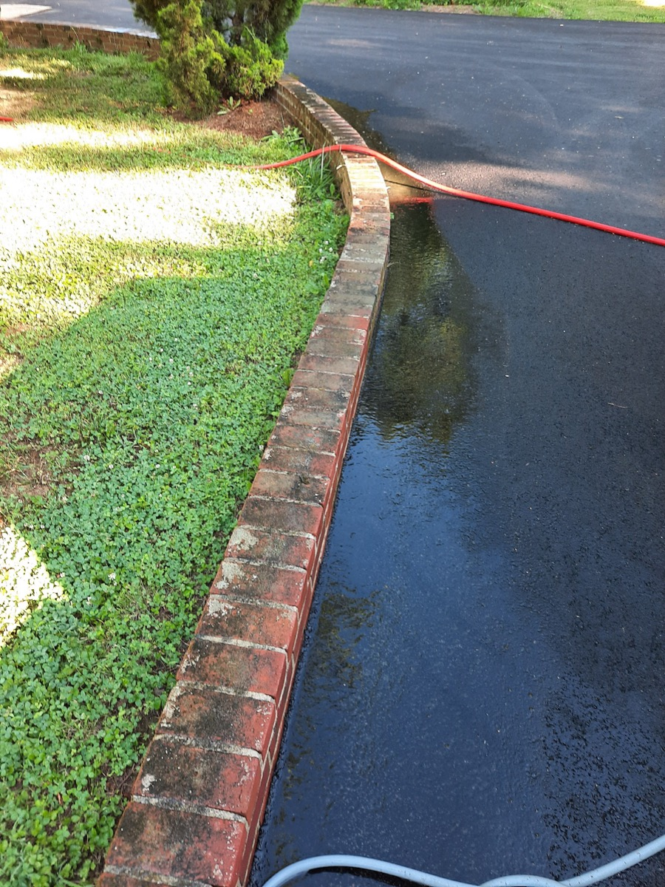
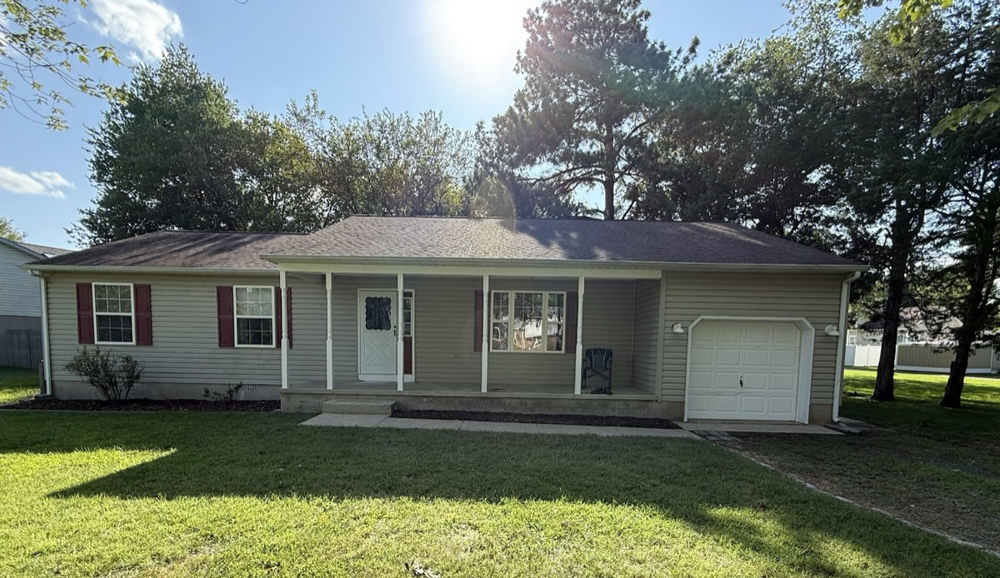

Easton & the Eastern Shore
Siding, windows, driveways, brick steps, roofs and gutters — soft-washed where it counts, real pressure where it’s earned. Owner-operated, by the same person who answers the phone and does the work.
Drag to see the difference
Every slider below is a real Wash’n A Shore job here on the Shore. Drag the handle and watch the green, grime and oxidation come off.


Before After

Before After
What we wash
Salt air, pollen and shade keep Eastern-Shore homes green and grimy. Each surface gets the method it needs — gentle soft-wash on siding and roofs, real pressure on concrete and brick.
Vinyl, hardboard and brick brought back to clean without blasting your paint or trim — the kind of finish a customer called “clean and presentable” again.
Exterior glass washed alongside the siding so the whole front of the house reads clean — part of the same visit, not a separate trip.
Driveways, walkways and entrance pads stripped of grime, mildew and tire marks back to an even, clean surface.
Front steps, patios and brick paths cleared of the slick green algae that builds up in the shade — safer underfoot and looking cared-for.
Low-pressure roof cleaning that lifts black streaks and algae without walking damage onto your shingles.
Packed leaves and debris cleared so storm water drains the way it’s supposed to — before it backs up behind the fascia.
Why neighbors call Lee
Read the reviews and the same things come up again and again: Lee answers his own phone, schedules around you, shows up on time, and doesn’t leave until the work is done right.
“Answered the phone when I called, came the next day, and was done by 2:00.” You talk to Lee, not a call center.
Reviewers note he works around their schedule and shows up when he says — with the right equipment to finish the job efficiently.
Soft-wash where pressure would do harm, real pressure where it’s safe — so your siding, shingles and brick come out cleaner, not chewed up.
5.0 / 31 reviews
In their words
“Lee did a great job. Answered the phone when I called, came the next day, and was done by 2:00. Sat and chat with my wife and I for a few minutes too. Really friendly, helpful service. 10/10 recommend.”
“They power washed my siding, windows, my entrance stairs & driveway. They did a great first class professional job. Now my house is clean and looks presentable. All done at a reasonable price.”
“Lee Foster does an excellent job at a very fair price. His communication is excellent and his availability to schedule our home power wash at a time convenient for us was perfect. You can’t go wrong with a local small business like Wash’n A Shore!”
“Lee responded to my call promptly and was able to schedule my job within a few days. He worked around my schedule and was on time. Professional and had the equipment to complete the project efficiently. I plan to use Wash n’ A Shore again!”
Recent work




Service area
Wash’n A Shore is a mobile exterior-cleaning service based in Easton, covering Talbot County and the surrounding Shore — St. Michaels, Oxford, Trappe, Cambridge and Denton. Not sure if you’re in range? Call or text — chances are we’ve washed nearby.
Call or send a quick photo by text and you’ll get a free estimate. Siding, windows, driveway, steps, roof or gutters — we’ll handle it the right way.